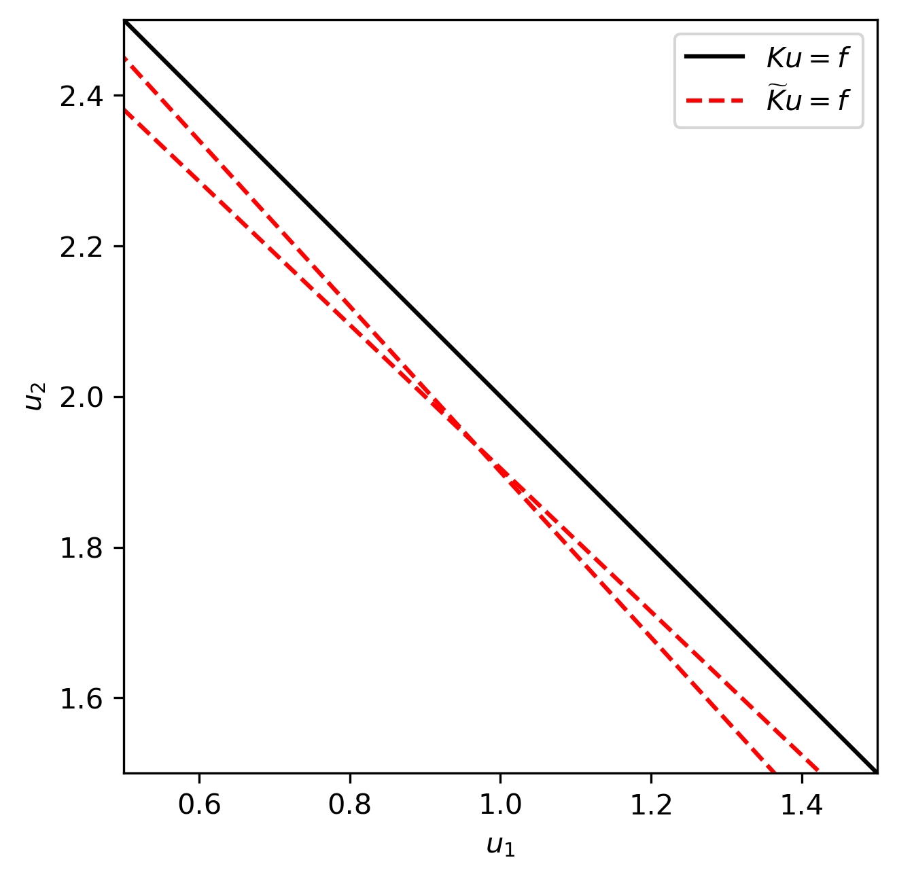
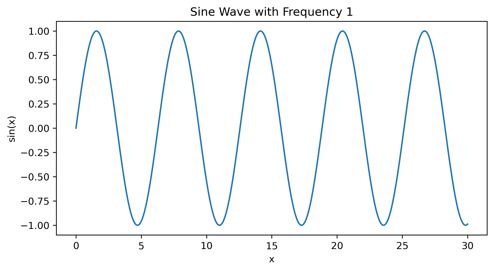

Pile#
Bienvenue dans ce chapitre interactif utilisant ThebeLab !
Exemple de code interactif#
jupytext: text_representation: extension: .md format_name: myst format_version: ‘0.9’ jupytext_version: 1.5.2 kernelspec: display_name: Python 3 language: python name: python3#
### Direct methods
In some special cases we can derive an explicit expression for (an approximation) of the solution of $K(u) = f$. For example, if $K$ represents a quadratic equation in one variable or a system of linear equations. In other cases, we may have an explicit expression for the inverse of a slightly modified forward operator, $\widetilde{K}$. This modified operator arises when the original inverse problem is ill-posed and is replaced by a modified inverse problem $\widetilde{K}(u) = f$ which is well-posed. The hope, in the latter case, is that $\widetilde{K}$ approximates $K$ well for the class of solutions we are looking for.
````{admonition} Example: *Inverting a rank-deficient matrix.*
Consider the matrix
$$
K = \left(\begin{matrix} 1 & 1\\ 2 & 2 \end{matrix}\right).
$$
Obviously this matrix is singular, so there is no way to define the inverse in the usual sense. However, modifying the matrix slightly
$$
\widetilde{K} = \left(\begin{matrix} 1 + \alpha & 1\\ 2 & 2 + \alpha\end{matrix}\right),
$$
allows us to compute the inverse. Indeed, given $f = K\overline{u}$ with $\overline{u} = (1,2)$ we have $f = (3,6)$. Applying the inverse of $\widetilde{K}$ we get $\widetilde{u} \approx (1,2)$. The corresponding equations are visualized in {numref}`matrix_inversion`.
```{glue:figure} matrix_inversion
:figwidth: 300px
:name: "matrix_inversion"
Original and regularized equations. We see that the regularized equations have a unique solution, but this solution is slightly biased towards the origin.
```
````
Cell In[1], line 2
In some special cases we can derive an explicit expression for (an approximation) of the solution of $K(u) = f$. For example, if $K$ represents a quadratic equation in one variable or a system of linear equations. In other cases, we may have an explicit expression for the inverse of a slightly modified forward operator, $\widetilde{K}$. This modified operator arises when the original inverse problem is ill-posed and is replaced by a modified inverse problem $\widetilde{K}(u) = f$ which is well-posed. The hope, in the latter case, is that $\widetilde{K}$ approximates $K$ well for the class of solutions we are looking for.
^
SyntaxError: invalid syntax
import numpy as np
import matplotlib.pyplot as plt
import matplotlib as mpl
mpl.rcParams['figure.dpi'] = 300
from myst_nb import glue
u1 = np.linspace(0,5,100)
u2 = np.linspace(0,5,100)
fig,ax = plt.subplots(1,1)
alpha = 1e-1
ax.plot(u1,3-u1,'k',label=r'$Ku=f$')
ax.plot(u1,3-(1+alpha)*u1,'r--',label=r'$\widetilde{K}u=f$')
ax.plot(u1,(6-2*u1)/(2+alpha),'r--')
ax.set_xlabel(r'$u_1$')
ax.set_ylabel(r'$u_2$')
ax.set_xlim([0.5,1.5])
ax.set_ylim([1.5,2.5])
ax.set_aspect(1)
ax.legend()
plt.show()
glue("matrix_inversion", fig, display=False)

import matplotlib.pyplot as plt
import numpy as np
from myst_nb import glue
def plot_sine(frequency=1):
x = np.linspace(0, 30, 1000)
y = np.sin(frequency * x)
plt.figure(figsize=(8, 4))
plt.plot(x, y)
plt.title(f'Sine Wave with Frequency {frequency}')
plt.xlabel('x')
plt.ylabel('sin(x)')
plt.show()
plot_sine()
glue("quadratic", plt, display=False)

import dolfinx
import ufl
from mpi4py import MPI
# Votre code dolfinx ici
import dolfinx
print(dolfinx.__version__)
0.8.0
try:
import dolfinx
print("dolfinx importé avec succès")
except ImportError as e:
print(f"Erreur lors de l'importation de dolfinx : {e}")
import sys
print(f"Python path : {sys.path}")
dolfinx importé avec succès
import dolfinx
print(f"DOLFINx version: {dolfinx.__version__} based on GIT commit: {dolfinx.git_commit_hash} of https://github.com/FEniCS/dolfinx/")
DOLFINx version: 0.8.0 based on GIT commit: of https://github.com/FEniCS/dolfinx/
# Importer les modules nécessaires
import pyvista as pv
from pyvista import examples
# Créer une simple sphère
sphere = pv.Sphere(radius=1.0, center=(0, 0, 0))
# Initialiser un Plotter pour afficher la géométrie
plotter = pv.Plotter()
plotter.add_mesh(sphere, color="cyan", show_edges=True)
plotter.add_axes() # Ajoute des axes pour faciliter la visualisation
plotter.show()